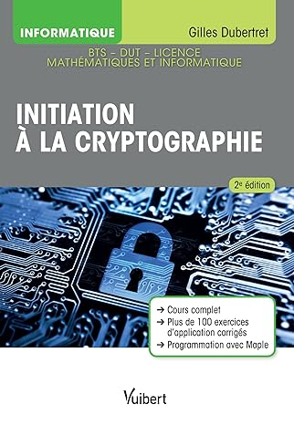

Initiation à la cryptographie
Écrit par : Gilles Dubertret
Publié le : 4 septembre 2018
Numéro ISBN13 : 978-2311406153
Nombre de page : 192
Langue : Français
Résumé :
Un manuel pour maîtriser les bases de la cryptographie appliquée aux
mathématiques et à l'informatique avec un cours concis et des exercices d'application corrigés.
La cryptographie, appelée science du secret, a vu ses possibilités décuplées au cours des siècles. Avec l’arrivée de
l’informatique, elle fait partie de notre quotidien, que ce soit sur l’Internet ou avec l’apparition des nouvelles puces
RFID présentes dans nos cartes bancaires. Riche de multiples possibilités et méthodes, cette discipline, servant à assurer
la sécurité et la confidentialité des communications et des données, s’impose à tous.
Cette nouvelle édition, revue et augmentée pour prendre en compte les technologies actuelles et les développements futurs
en matière de sécurité, est destinée aux étudiants en premier cycle des études supérieures des cursus mathématiques et
informatique.
On y trouve un cours complet augmenté de chapitres traitant des nouvelles méthodes de cryptographie (AES, chiffrement
homomorphe, etc.) et de nombreux exercices corrigés (actualisés), pour comprendre et maîtriser les mécanismes à l’œuvre dans
les échanges de données.